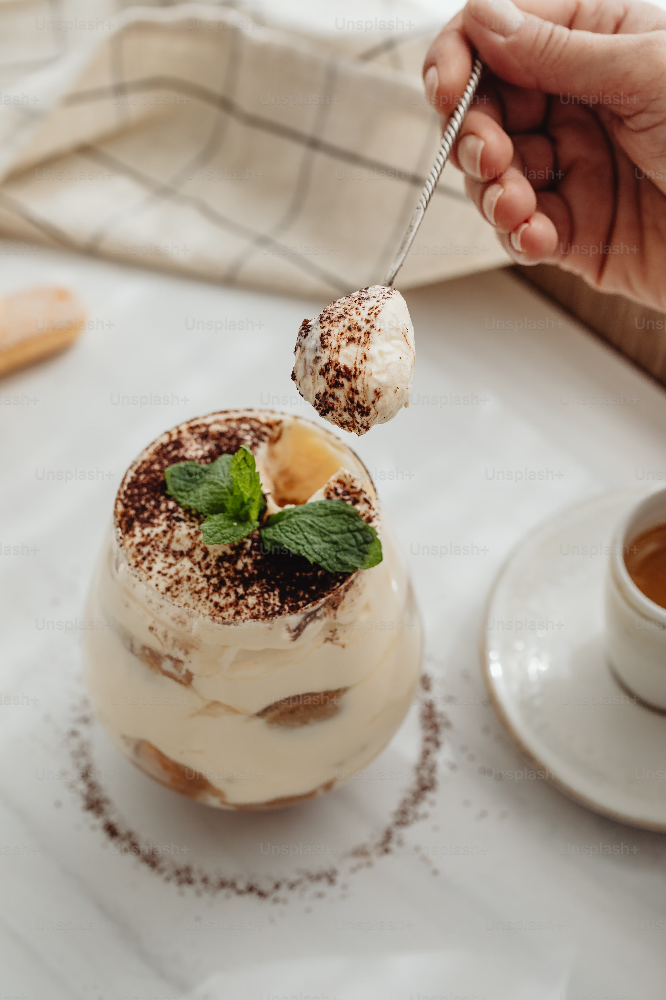
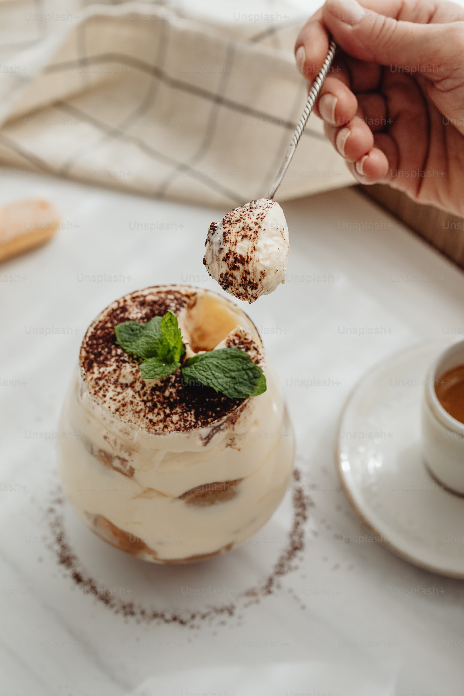

CLASSIC
TIRAMISU
From the heart of Italy to your plate.
For over 60 years, this timeless dessert has brought sweetness to life, from luxury dining rooms to cherished homemade moments.
ABOUT
TIMELESS ITALIAN DELIGHT
Tiramisu is a classic Italian dessert that has won hearts worldwide with its irresistible layers of coffee-soaked ladyfingers, mascarpone cheese, and a dusting of cocoa powder. Originating from the Veneto region of Italy, Tiramisu combines the best of coffee, cream, and cocoa, The beauty of Tiramisu lies not just in its simple ingredients but in the harmonious balance of textures and flavours – the smooth, creamy mascarpone filling contrasts beautifully with the slight crunch of the ladyfingers and the bold, aromatic coffee.
tirami su 'pick me up' or 'cheer me up' - Italian meaning
 

Perfect for Any Occasion
Whether served at a family gathering, a special celebration, Tiramisu is a dessert that brings people together. Its sophisticated flavour and delicate textures make it the ideal way to end any meal.
HISTORY
Tiramisu, one of Italy's most beloved desserts, has an intriguing and somewhat mysterious history. Its origins are often debated, with several regions and towns in Italy claiming to be the birthplace of this delicious treat.
Origins in the Veneto Region
The most widely accepted story suggests that Tiramisu was created in the Veneto region, specifically in the town of Treviso, in the 1960s. It is believed to have been invented by Carlo Valerio at Le Beccherie, a renowned restaurant. The dessert was originally made to celebrate a local tradition and was designed to be a revitalizing treat, rich in energy and flavor. The name "Tiramisu" translates to "pick me up," reflecting the dessert's energizing ingredients, including strong coffee and cocoa.
The Rival Claims
Despite the popular belief that Tiramisu was born in Treviso, other regions in Italy also claim to have invented it. In the region of Friuli Venezia Giulia, some believe that the dessert dates back to the 1950s, while others assert that Tiramisu has roots in the more ancient "soup of the poor" made with savoiardi biscuits, a sweet version of the humble dessert known to be served in northern Italy as early as the 17th century.
Global Phenomenon
Tiramisu quickly spread beyond Italy, becoming a worldwide sensation. Its rise to fame in the 1980s and 1990s coincided with the global boom in Italian cuisine, as more and more people fell in love with it. Today, desert is enjoyed in many variations around the world and is a staple at Italian restaurants and home kitchens alike.